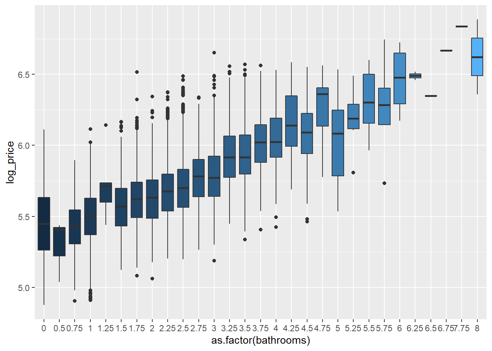
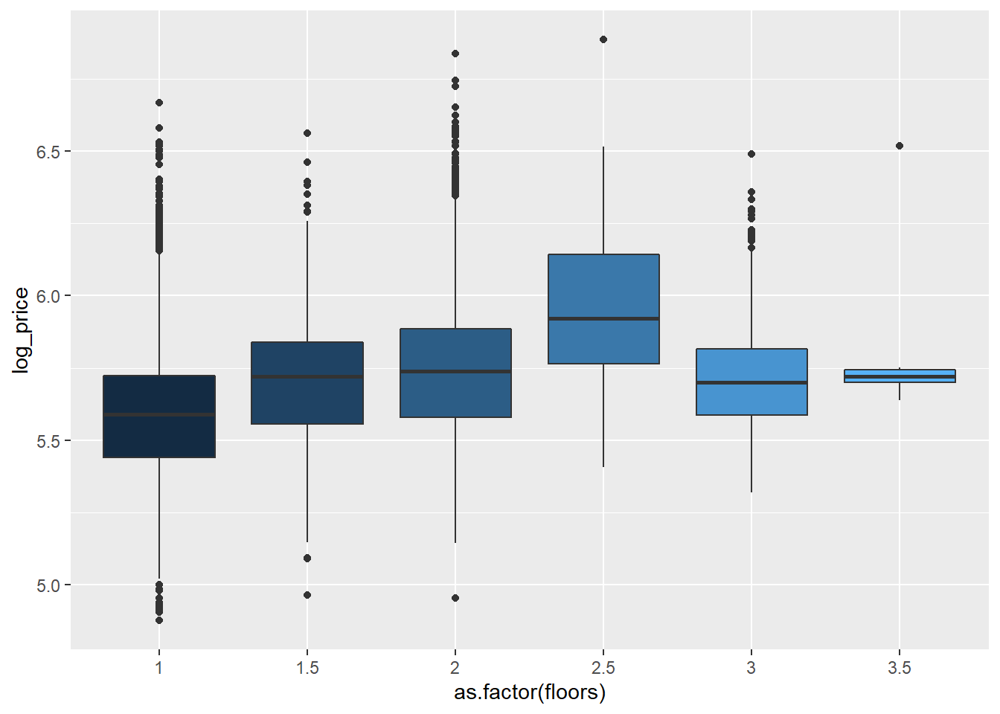

6 Detección, tratamiento e imputación de datos faltantes
En nuestros datos no tenemos datos faltantes, pero gracias al análisis exploratorio previamente hecho nos hemos dado cuenta de que tenemos outliers en diferentes variables.
## [1] 0En el caso de la variable Bedrooms hemos visto que hay 13 casas con 0 habitaciones y una con 33. Como en nuestro estudio no tenemos datos faltantes. Hemos comprobado con la latitud y la longitud (véase la Figura 1), que la casa con 33 habitaciones es un dato erróneo, ya que su estructura es muy parecida a las casas de los alrededores y no tienen 33 habitaciones. Lo que vamos a hacer a continuación es suponer que la casa con 33 habitaciones es un NA y estudiar cómo imputar ese dato faltante.

Figura 1
Primero nos vamos a crear un dataframe auxiliar para probar diferentes métodos y poder tomar una decisión.
datos_train$posicion<-c(1:nrow(datos_train))
indice_hab33 <- datos_train[datos_train$bedrooms==33,]$posicion
indice_hab33## [1] 8742datos_train_aux1 <- datos_train
datos_train_aux1$bedrooms[datos_train_aux1$bedrooms==33] <-NA
#sum(is.na(datos_train_aux))
datos_train_aux2 <- datos_train
datos_train_aux2$bedrooms[datos_train_aux2$bedrooms==33] <-NA
datos_train_aux3 <- datos_train
datos_train_aux3$bedrooms[datos_train_aux3$bedrooms==33] <-NAAhora lo vamos a imputar mediante regresión simple:
datos_mice<-datos_train_aux1[,c(3:12,15,16)]
#dist(datos_train[8742,18:19])
# Imputación simple, regresión ordinaria:
imp_1 = mice(datos_mice, method = "norm.predict", m=1) # Cálculo método de imputación##
## iter imp variable
## 1 1 bedrooms
## 2 1 bedrooms
## 3 1 bedrooms
## 4 1 bedrooms
## 5 1 bedroomsdatostrain_mice = complete(imp_1) # Imputación de valores
datostrain_mice$posicion<-c(1:nrow(datostrain_mice))
#Ha imputado:
datostrain_mice[datostrain_mice$posicion == indice_hab33,]$bedrooms## [1] 3.195055Ha imputado con el valor 3.208425. Como las habitaciones toman valores discretos, nos quedamos con 3 habitaciones.
# SI QUEREMOS EJECUTAR ESTO HAY QUE HACER EL FLOOR() DE ARRIBA PARA QUE NO SALGA DECIMAL LA HABITACION
#sólo hago los gráficos para ver el valor que ha imputado
# ggplot(datostrain_mice, aes(x=as.factor(bedrooms), y=price, fill=bedrooms)) + geom_boxplot() + guides(fill=FALSE)
# Para imputar los datos faltantes o erróneos ver qué técnica usar:
# datos$bedrooms[datos$bedrooms==0] = mean(datos$bedrooms)
# datos$bedrooms[datos$bedrooms==33] = mean(datos$bedrooms)
# Repasar qué técnicas usar# Imputación multiple, regresión estocástica:
imp_2 = mice(datos_mice2, method = "norm.nob", seed=1234)# Cálculo método de imputación##
## iter imp variable
## 1 1 bedrooms
## 1 2 bedrooms
## 1 3 bedrooms
## 1 4 bedrooms
## 1 5 bedrooms
## 2 1 bedrooms
## 2 2 bedrooms
## 2 3 bedrooms
## 2 4 bedrooms
## 2 5 bedrooms
## 3 1 bedrooms
## 3 2 bedrooms
## 3 3 bedrooms
## 3 4 bedrooms
## 3 5 bedrooms
## 4 1 bedrooms
## 4 2 bedrooms
## 4 3 bedrooms
## 4 4 bedrooms
## 4 5 bedrooms
## 5 1 bedrooms
## 5 2 bedrooms
## 5 3 bedrooms
## 5 4 bedrooms
## 5 5 bedroomsdatostrain_mice2 = complete(imp_2) # Imputación de valores sustiyuye 33
datostrain_mice2$posicion<-c(1:nrow(datostrain_mice2))
#Ha imputado:
datostrain_mice2[datostrain_mice2$posicion == indice_hab33,]$bedrooms## [1] 3.198521En este caso el valor que toma es 3.211892, por lo que coincide con el anterior en que son 3 habitaciones lo que tenemos que imputar.
#sólo hago los gráficos para ver el valor que ha imputado
#
# ggplot(datostrain_mice2, aes(x=as.factor(bedrooms), y=price, fill=bedrooms)) + geom_boxplot() + guides(fill=FALSE)Otro modo de imputar el dato faltante es compararlo con los vecinos más cercanos.Para ello lo que hemos ehcho es calcular la diferencia entre la latitud de la casa con 33 habitaciones con el resto y lo mismo para la longitud. Luego hemos sumado esas diferenecias y nos hemos quedado con las 15 distancias más pequeñas.
datos_train_aux3$diferencia_lat<- abs(datos_train$lat[datos_train$bedrooms==33]-datos_train[,18])
datos_train_aux3$diferencia_long<- abs(datos_train$long[datos_train$bedrooms==33]-datos_train[,19])
datos_train_aux3$diferencia_total <- datos_train_aux3$diferencia_lat+datos_train_aux3$diferencia_long
casas_mas_cercanas <- as.data.frame(sort(datos_train_aux3$diferencia_total,index.return=TRUE))
indices_casas_cercanas <- casas_mas_cercanas$ix[2:16] # la primera no se coge porque es la propia casa con 33 habitaciones
mean(datos_train_aux3$bedrooms[indices_casas_cercanas])## [1] 3.2El resultado que obtenemos en este caso es 3.333333. Al igual que en los métodos anteriores, la imputación sería de 3 habitaciones.
Por lo que finalmente imputamos que esa casa tiene 3 habitaciones.
Con el Boxplot observamos lo siguiente:
La casa que tiene 33 habitaciones tiene menos pies cuadrados que el resto de las casas, por lo que confirma que es un dato erróneo.(Podríamos elimarlo)
Las casas que tienen 0 habitaciones (13 casas), tienen más pies cuadrados, por lo que sería también un dato erróneo, ya que revisando en google maps por las corrdenadas longitud y la latitud son casas que incluso tienen varias plantas.
En el caso de la variable Bathroom hemos visto que hay 10 casas con 0 baños. Vamos a comparar la variable número de baños con los pies cuadrados habitables. Porque con un razonamiento lógico cuanto más espacio más número de baños.

